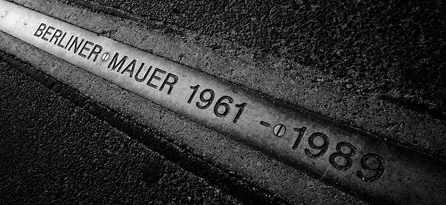
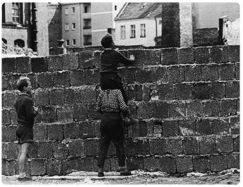

Ludovico
Venturi
INFORMATICA COME SUPERAMENTO DEI LIMITI UMANI
01001001 01001110 01000110 01001111 01010010 01001101 01000001 01010100 01001001 01000011 01000001 00100000 01000011 01001111 01001101 01000101 00100000 01010011 01010101 01010000 01000101 01010010 01000001 01001101 01000101 01001110 01010100 01001111 00100000 01000100 01000101 01001001 00100000 01001100 01001001 01001101 01001001 01010100 01001001 00100000 01010101 01001101 01000001 01001110 01001001
Luigi Pirandello
Io penso che la vita è una molto triste buffoneria...
... poiché abbiamo in noi [..] la necessità d’ingannare di continuo noi stessi, con la spontanea creazione di una realtà (una per ciascuno e non mai la stessa per tutti) la quale di tratto in tratto si scopre vana e illusoria ...
Giacomo Leopardi
Perchè reggere in vita
Chi poi di quella consolar convenga?
Se la vita è sventura,
Perchè da noi si dura?
Ma poiché quel che è distrutto, patisce, e quel che distrugge non gode, e a poco andare è distrutto medesimamente; dimmi [natura] quello che nessun filosofo mi sa dire: a chi piace o a chi giova cotesta vita infelicissima dell’universo?
Salvatore Quasimodo
Ognuno sta solo sul cuor della Terra
trafitto da un raggio di sole
Ed è subito sera.
... Leopardi
Questa la sorte dell’umane genti?
Charles Darwin
Man in his arrogance thinks himself a great work, worthly the interposition of a great deity.
More humbly I believe true to consider him created from animals.
L'uomo nella sua arroganza si crede un'opera grande, meritevole di una creazione divina. Più umilmente, io credo sia giusto considerarlo discendente dagli animali.
Edgar Allan Poe
We are surely doomed to hover continually upon the brink of Eternity, without taking a final plunge into the abyss
Siamo destinati per sempre a stare in equilibrio sul confine dell'eternità senza effettuare il tuffo definitivo nell'abisso
Life is trivial.
Ugo Foscolo
Vagar mi fai co' miei pensier su l'orme
che vanno al nulla eterno ...
uomo == asintoto -> true
William Golding
"Fun and games", said the officer
"Ve la spassate", disse l'ufficiale
Eugenio Montale
E andando nel sole che abbaglia
sentire con triste meraviglia
com’è tutta la vita e il suo travaglio
in questo seguitare una muraglia
che ha in cima cocci aguzzi di bottiglia.
Italo Calvino
L'inferno dei viventi [..] se ce n'è uno, è quello che [..] formiamo stando insieme.
Oscar Wilde
Those who go beneath the surface do so at their peril
Those who read the symbol do so at their peril
Fëdor Dostoevskij
Vi giuro, signori, che aver coscienza di troppe cose è una malattia, una vera e propria malattia. [...] Infatti, il diretto, legittimo, immediato frutto della coscienza è l'inerzia, cioè il cosciente starsene a mani conserte.
Italo Svevo
Solo noi malati sappiamo qualche cosa di noi stessi.
... Pirandello
Chi ha capito il giuoco, non riesce più ad ingannarsi e non può più prendere né gusto né piacere alla vita.
Quando tu, in una parola, vivrai senza la vita, penserai senza un pensiero, sentirai senza cuore allora tu non saprai che fare: sarai un viandante senza casa, un uccello senza nido
Charles Baudelaire
Il poeta è come il principe delle nuvole
Che abituato alla tempesta ride dell’arciere;
esiliato sulla terra fra gli scherni,
non riesce a camminare per le sue ali di gigante.
Guido Gozzano
Oh! Questa vita sterile, di sogno!
Meglio la vita ruvida concreta
del buon mercante inteso alla moneta,
meglio andare sferzati dal bisogno,
ma vivere di vita!
Giovanni Verga
Quando gli dissero che era tempo di lasciare la sua roba, per pensare all’anima, uscì nel cortile come un pazzo, barcollando, e andava ammazzando a colpi di bastone le sue anitre e i suoi tacchini, e strillava: “roba mia, vientene con me!”
... Montale
L’uomo che se ne va sicuro
agli altri ed a sé stesso amico
e l’ombra sua non cura che la canicola
stampa sopra uno scalcinato muro
Forse gli automi hanno ragione
... Pirandello
ciò vorrebbe però dire indossare una maschera fissa
Maschere...
Ne esistono di vaie genere, ad esempio le
WildCard Mask
0.0.0.3
WildCard Mask
ACL
Firewall
Firewall Packet-filtering
Muri di controllo


Voluto dalla RDT
Iniziato nel 1961
155 km
Più di 100 morti
20 bunker, 116 torri di controllo, 25000 uomini
Harry Truman
Un'offesa all'umanità
Viktor Suvorov
Il muro significava che il sistema che i comunisti avevano costruito non attraeva ma repelleva